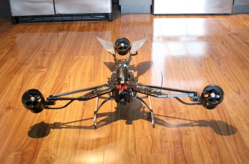
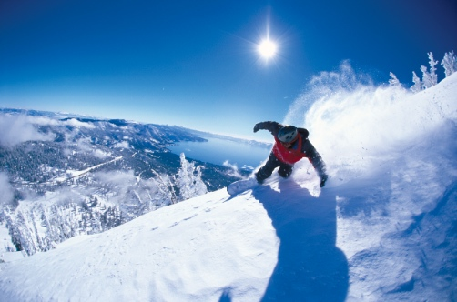
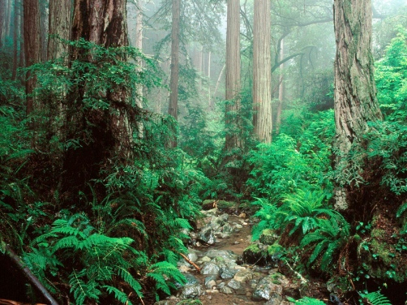
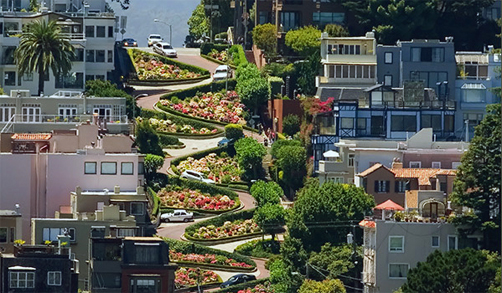
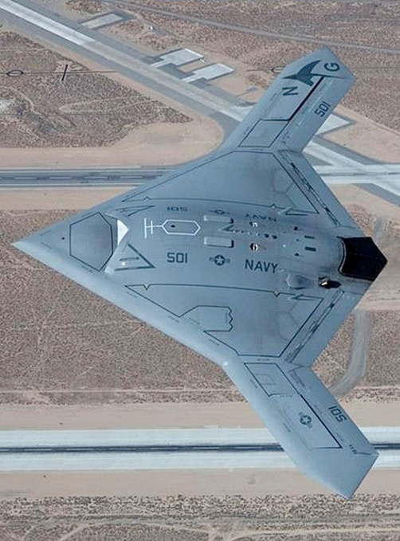
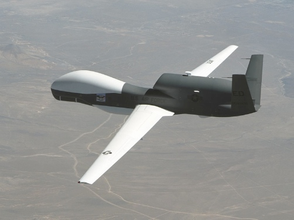
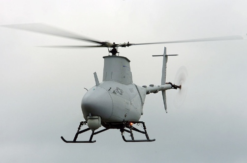
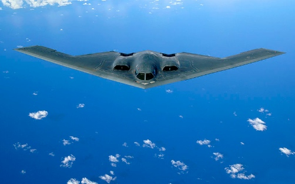

Welcome!
I'm Jesse, an full-stack software developer in San Francisco. I currently commute to the Silicon Valley everyday for my current position. While I am comfortable and content in my current role, I am always open to new and exciting opportunities to do cool work.
Some of my professional experience includes:
- Unobtrusive JavaScript
- Single page applications
- Web service integration
- Cloud/distributed application development
- MySQL & MongoDB (and a little CouchDB)
- Full-stack development on J2EE applications
- Using a combination of CSS and JavaScript to replace flash!
Here are some other things that I greatly enjoy (other than software of course!)
Drones:
My current project is a ducted fan-powered (instead of propellor) tri-copter drone that is capable of performing autonomous tasks ranging from aerial photo mapping to bringing cold drinks on a hot day! If you are interested, the control for this project is provided by Arduino
Lake Tahoe!
Wether its snowboarding, skiing, tubing, swimming, hiking, or simply enjoying the beautiful scenery, my favorite outdoor place is without a doubt Lake Tahoe. For winter sports, my stomping ground is Squaw Valley.
Hiking (or anything outdoors)
Anytime I can get away form the hustle and bustle of the city a d retreat to the domain of nature, I do. Luckily, northern california is full of such locations ranging from serene foggy beaches to enchanting redwood forests.
Exploring San Francisco
As a new resident yet long time fan of this beautiful city, I try to do something new at every opportunity I get. From eating at a different restaurant every time I go out or hitting up the newest bar that has been recommended, this city is full of excitement and diversity which is what drew me here in the first place.
Defense and aerospace
As a former 'minion' of the defense industry, I was part of some cool projects, including but not limited to:
X-47B: The first autonomous drone to be used on an aircraft carrier.
RQ-4 Global Hawk: A large high altitude drone used for reconnaissance
MQ-8 Fire Scout: A small drone helicopter used for reconnaissance and attack
B-2 Spirit: better known as the stealth bomber, developer to deliver nuclear weapons but now used for conventional warfare
